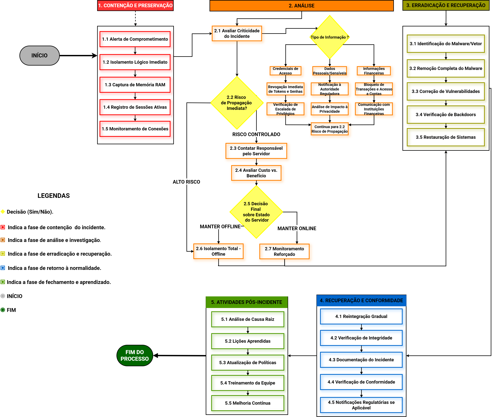
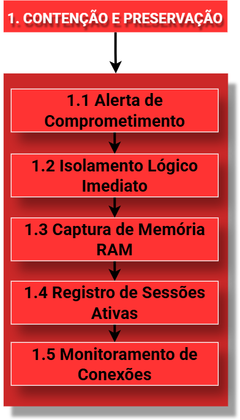
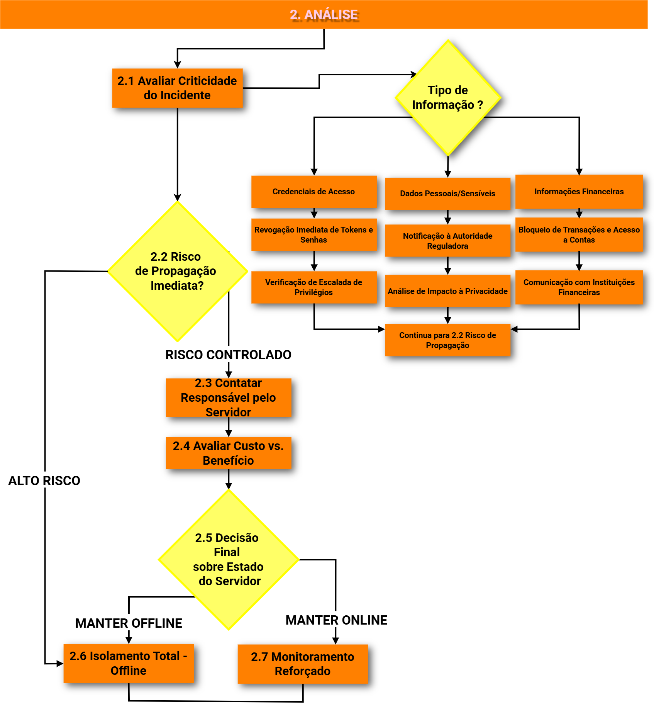
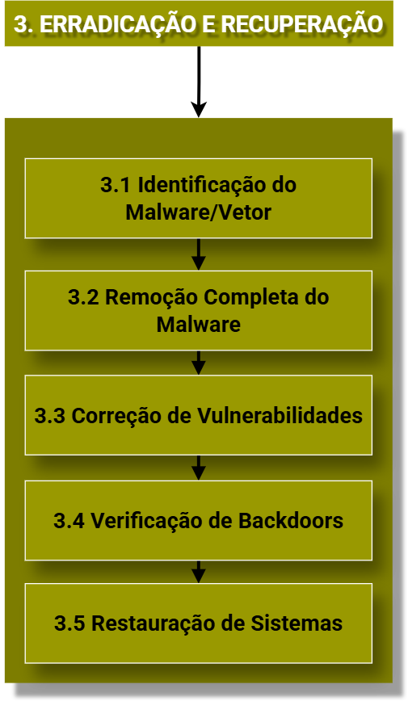
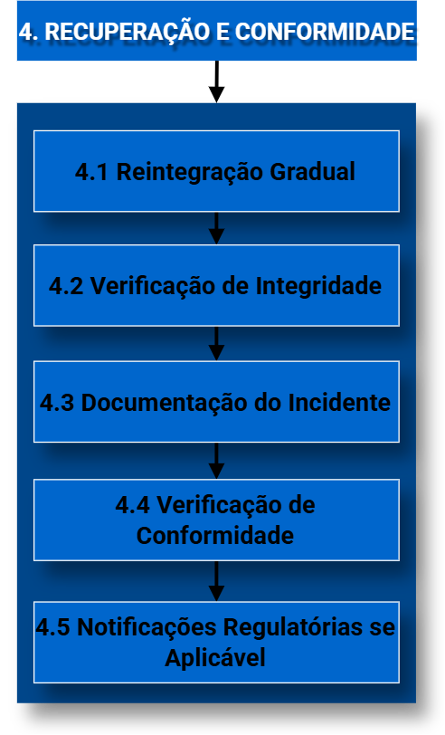

FLUXOGRAMA DE DECISÃO
Playbook de Resposta a Incidentes
FLUXOGRAMA GERAL

FASE 1

Sobre esta Fase
Nesta fase, o objetivo é agir rapidamente para impedir a propagação do ataque e preservar evidências para análise posterior.
Passos do Fluxograma
- 1.1 Alerta de Comprometimento Médio
- Momento em que o incidente é detectado por sistemas de monitoramento ou usuários.
- 1.2 Isolamento Lógico Imediato Alto
- Desconectar o sistema afetado da rede para evitar propagação. Ponto mais crítico.
- 1.3 Captura de Memória RAM Médio
- Registrar dados voláteis antes que sejam perdidos.
- 1.4 Registro de Sessões Ativas Baixo
- Identificar usuários e processos no momento do ataque.
- 1.5 Monitoramento de Conexões Médio
- Observar tráfego para identificar canais de comunicação do invasor.
Ferramentas sugeridas e Como Usar
- Wireshark (Rede): Ferramenta padrão para Monitoramento de Conexões e análise de tráfego.
- Volatility: Framework líder para análise forense de memória - essencial para a Captura de RAM.
- Sysinternals Suite: Ferramentas essenciais para o Registro de Sessões Ativas e monitoramento de processos.
- Infraestrutura de Rede e EDR/XDR: Firewalls (bloqueio de tráfego), Switches (VLAN ou desconexão de portas) e soluções de EDR/XDR (isolamento de endpoint) para execução de ações em tempo real.
FASE 2

Sobre esta Fase
Avaliar a gravidade do incidente e decidir medidas estratégicas.
Passos e Criticidade
- 2.1 Avaliar Criticidade Alto
- Verificar credenciais, dados pessoais ou financeiros comprometidos.
- 2.2 Risco de Propagação Alto
- Checar se o ataque está ativo.
- 2.3 Contatar Responsável pelo Servidor Alto
- Coordenar ações técnicas com administradores.
- 2.4 Avaliar Custo vs. BenefícioAlto
- Decidir entre manter o servidor online ou offline.
- 2.5 Decisão Estratégica Alto
- Optar entre Isolamento Total (Offline) ou Monitoramento Reforçado (Online).
Ferramentas sugeridas de Análise Técnica e Forense
- SIEM (Ex: Splunk, Microsoft Sentinel, ELK): Centralização e correlação de logs para medir o impacto e identificar o caminho (timeline) do invasor.
- EDR/XDR (Ex: CrowdStrike, SentinelOne, Microsoft Defender for Endpoint): Essencial para ver processos em tempo real e determinar se o ataque ainda está ativo.
- Analisadores Forenses (Ex: Autopsy, Magnet AXIOM): Para "autópsias digitais", permitindo ver arquivos acessados, deletados e modificações no registro do sistema.
- Inteligência de Ameaças (Ex: VirusTotal, Any.Run): Para analisar arquivos suspeitos em ambientes isolados (Sandboxing) e confirmar se são malwares conhecidos.
- Scanners de Vulnerabilidade (Ex: Nessus, Tenable): Para identificar qual "buraco" no sistema permitiu a entrada, auxiliando na decisão entre manter o servidor online ou offline.
FASE 3

Sobre esta Fase
Eliminar o agente malicioso e restaurar os sistemas afetados.
- 3.1 Identificação do Vetor Alto
- Descobrir a porta de entrada.
- 3.2 Remoção de Malware Alto
- Limpeza total do código malicioso.
- 3.3 Correção de Vulnerabilidades Médio
- Aplicar atualizações e reforçar segurança.
- 3.4 Verificação de Backdoors Alto
- Garantir que não restaram acessos ocultos.
- 3.5 Restauração de Sistemas Médio
- Recuperar ambiente funcional com backups ou reinstalação.
Ferramentas de Erradicação e Limpeza
- EDR/XDR (Ex: CrowdStrike, SentinelOne): Utilizados para a Identificação e Remoção Completa do Malware através de funções de "remediação" que eliminam processos e arquivos maliciosos em tempo real.
- Scanners de Vulnerabilidades (Ex: Nessus, OpenVAS): Essenciais para a Correção de Vulnerabilidades; eles varrem o sistema em busca de falhas que permitiram a entrada, garantindo que o "buraco" seja fechado.
- Gestão de Patches (Ex: WSUS, SCCM, Ivanti): Ferramentas fundamentais para aplicar atualizações de segurança em massa, garantindo que todos os servidores recebam as correções necessárias rapidamente.
- Verificadores de Backdoors (Ex: Rootkit Hunter, Lynis): Ferramentas específicas para Verificação de Backdoors, que buscam por scripts ocultos, usuários criados indevidamente ou alterações em binários do sistema.
- Ferramentas de Limpeza de Registro e Persistência (Ex: Autoruns): Para identificar e remover chaves de registro que fazem o malware "ressuscitar" toda vez que o computador é ligado.
FASE 4

Sobre esta Fase
Retomar operações com segurança e atender exigências legais.
- 4.1 Reintegração Gradual Médio
- retorno controlado dos sistemas à operação.
- 4.2 Verificação de Integridade Alto
- Validar se sistemas e dados estão 100% confiáveis.
- 4.3 Documentação do Incidente Médio
- registrar todas as ações tomadas.
- 4.4 Verificação de Conformidade
- Checar alinhamento com normas como LGPD ou ISO 27001.
- 4.5 Notificações Regulatórias Alto
- Informar autoridades se houver vazamento (LGPD).
Ferramentas de Recuperação e Conformidade
- Soluções de Backup e DR (Ex: Veeam, Commvault, Azure Site Recovery): Essenciais para a Restauração de Sistemas. Permitem o "Instant Recovery" para retomar a operação rapidamente.
- Sandboxing de Restauração (Ex: Veeam DataLabs): Permite restaurar o backup em um ambiente isolado primeiro para realizar a Verificação de Integridade e garantir que o backup não contém o malware adormecido.
- Ferramentas de Verificação de Integridade de Arquivos (Ex: Tripwire, OSSEC): Garantem que os arquivos restaurados são idênticos aos originais e não foram modificados durante o incidente.
- Plataformas de Governança e Privacidade (Ex: OneTrust, TrustArc): Fundamentais para a Verificação de Conformidade com a LGPD, ajudando a mapear quais dados sensíveis foram expostos.
- Sistemas de Gestão de Documentação (Ex: Confluence, SharePoint): Para a Documentação do Incidente, centralizando evidências e cronologia para possíveis auditorias ou Notificações Regulatórias.
FASE 5

Sobre esta Fase
Aprender com o erro e fortalecer a postura de segurança.
- 5.1 Análise de Causa Raiz Alto
- Descobrir a falha estrutural.
- 5.2 Lições Aprendidas Alto
- Compartilhar descobertas com a equipe.
- 5.3 Atualização de Políticas Alto
- Revisar normas e procedimentos.
- 5.4 Treinamento da Equipe Alto
- Capacitar colaboradores para prevenção.
- 5.5 Melhoria Contínua Médio
- Implementar prevenção para evitar reincidência.
Ferramentas de Aprendizado e Melhoria Contínua
- Plataformas de GRC (Ex: ServiceNow, Archer): Essenciais para a Gestão de Riscos. Elas ajudam a atualizar as políticas de segurança e garantem que as melhorias sejam monitoradas pela diretoria.
- Plataformas de Awareness/Treinamento (Ex: KnowBe4, GoPhish): Elas são usadas para o Treinamento da Equipe, simulando novos ataques para testar se os colaboradores aprenderam a lição do incidente real.
- Sistemas de Retenção de Conhecimento (Ex: Wiki interna, Confluence): Para criar a base de conhecimento das Lições Aprendidas, evitando que a experiência se perca caso algum membro da equipe saia da empresa.